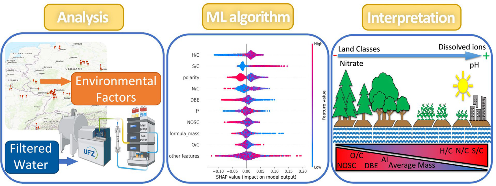
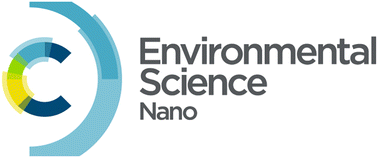
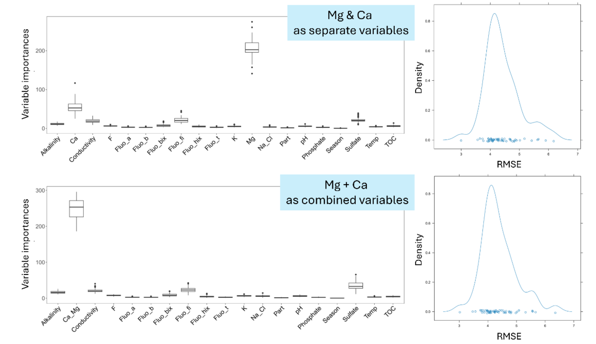
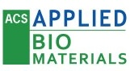
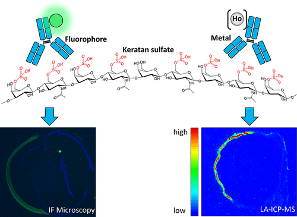

Investigating the fate and behavior of nanoparticles in aquatic environments through advanced analytical techniques and machine learning approaches. Developing SciTrace, an innovative research data management platform for scientists.
Advancing understanding of environmental processes through analytical chemistry
Investigating the transformation and environmental impact of nanoparticles in surface waters using advanced mass spectrometry techniques.
Characterizing dissolved organic matter composition and its interaction with environmental factors across diverse aquatic systems.
Developing multivariate random forest models to predict molecular composition and environmental behavior patterns.
Currently finalizing the second manuscript of my PhD thesis on "Capabilities, Limitations, and Optimization Strategies of using LDI-FT-ICR MS for DOM Corona Characterization on Nanoparticles". This comprehensive study explores the analytical potential and challenges of Laser Desorption/Ionization Fourier Transform Ion Cyclotron Resonance Mass Spectrometry for characterizing dissolved organic matter corona formation on nanoparticles.
Released the complete R-based pipeline for analyzing molecular formula patterns in Suwannee River Fulvic Acid (SRFA) samples and comparing them across gold nanoparticles (AuNP) and P25 TiO₂ nanoparticles. This reproducible computational framework includes data preprocessing, group-wise aggregation, intensity-weighted averages, and publication-ready visualizations including Van Krevelen diagrams.
Released the computational code for the DOM composition analysis published in Water Research. This repository contains the machine learning models and analytical workflows used to identify environmental drivers of dissolved organic matter composition across central European aquatic systems using FT-ICR MS data.
Successfully completed and published the first version of SciTrace v0.1.0, research data management platform. This initial release includes core data lineage tracking, seamless code execution, and interactive visualizations for research workflows.
Recent scientific contributions to environmental chemistry
Water Research
2025

Novel correlation-based machine learning model integrating FT-ICR MS data to predict DOM composition and identify key environmental drivers.

Environmental Science: Nano
2025

Novel approach for determining and predicting the ζ-potential of nanoparticles in surface waters using XGBoost models and in-situ exposure methods.

ACS Applied Bio Materials
2022

Advanced bioimaging workflow using immunofluorescence microscopy and LA-ICP-MS for spatial resolution of biomolecules.
Academic journey in environmental analytical chemistry
Leading research on nanoparticle behavior in aquatic environments using advanced mass spectrometry and machine learning approaches.
Research collaboration on spICP‑MS signal processing and data analysis for nanoparticle characterization and particle‑event detection.
Collaborative research with Charité applying advanced tissue imaging for early cancer detection and biomarker analysis.
Advancing research data management through innovative tools
A comprehensive research data lineage platform that integrates with DataLad functionalities and adds interactive visualizations for the complete data lifecycle. SciTrace helps researchers track data transformations, execute code seamlessly, and maintain complete trails of their research data workflows.
Complete traceability of data transformations and processing steps
Integrated code execution within the data management workflow
Visual representation of data flows and dependencies
Ensures Findable, Accessible, Interoperable, and Reusable data
Interested in collaboration or research opportunities?
michel.gad@outlook.com
Helmholtz Centre for Environmental Research (UFZ)
Leipzig, Germany